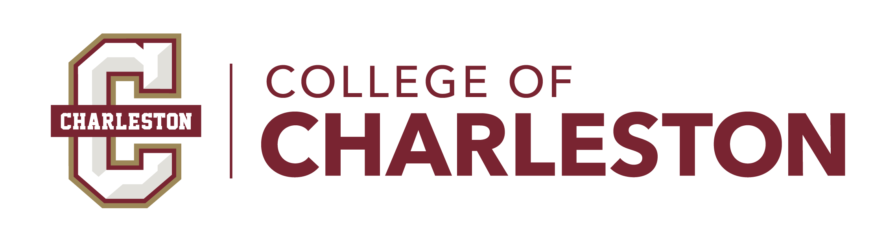

School of BusinessGraduate Programs · MBA
MBA StrategyMBAD 560-01 · Strategic Management · Fall 2026
Why do some firms outperform others — and can that advantage last?
The whole course is one sustained answer to that question. The best strategic
thinking comes to life through real cases, four hands-on simulations, and a live client
engagement — never as a checklist of tools.
2 credits · Express I
Mon / Wed · Aug 17 – Sep 30
Case-discussion led
First MBA strategy course
Instructors · Hadi Shaheen, PhD
shaheenh@cofc.edu
· Kamyar Goudarzi, PhD
goudarzik@cofc.edu
Woven throughout
Application — real firms, real decisions
We explore some of today's most exciting and consequential industries —
from premium dairy and global wine to Big Tech's AI race, cloud computing, and digital
platforms — and apply the best strategic thinking to real companies and the decisions their
leaders actually face. Everything then comes together in a live engagement with a real client.
Anchor cases — real firms under the microscope
The a2 Milk Company
HBS · Sess. 1
What is strategy? why firms differ
Dairy & Consumer GoodsAI Wars
HBS · Sess. 2
Industry structure & value capture
Big Tech · Generative AIGamma
HBS · Sess. 5
Capabilities & durable advantage
AI-Native Software Startup
Individual simulations — rehearse each module solo
Coffee Shop
FO0004 · Sess. 2–3
Value creation & capture
Food & Beverage RetailCloudStrat
KE1167 · Sess. 5–7
Platforms, business models, disruption
Enterprise Cloud / SaaSViv8
LC0011 · Sess. 6–9
Strategy under uncertainty / scope
Digital Platform · Marketplace vs. MetaverseVinho Rio
LC0023 · Sess. 7–10
Global & market entry
Global Wine & Beverage
Live Consulting Project — a real client, the full toolkit
Form & scope→
★ Client kickoff→
Collect & analyze→
★ Mid-point→
Strategize→
◆ Final panel
Five real client companies across a range of industries — a strategic challenge per company, sourced by the MBA program.